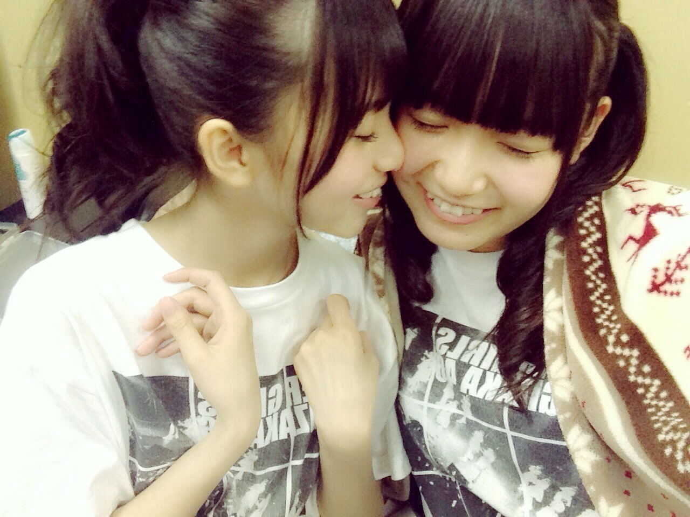
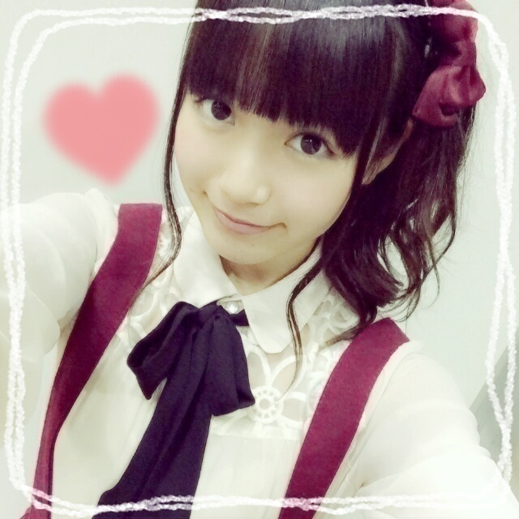
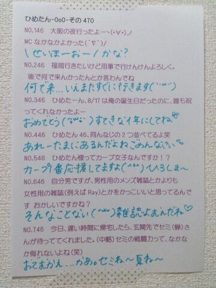
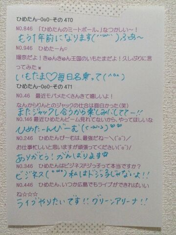
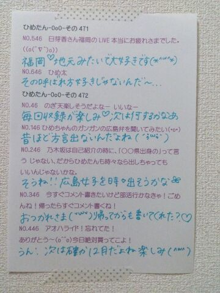

| 2014/11 10 Mon | ひめたん-OoO-その497 |

今日発売の週プレさんに
ひめたんちらっと載ってます＼(^o^)／
「嫌みなほどデキる女」という
噂が囁かれているひめたんですが
真相はいかに！といった感じ......
ほらー気になってきたでしょ(笑)
よろしくお願いします♡
乃木ののは聴いてくれたかな？
楽しかった～
ラジオだいすき～( ^o^ )♪

あすかりんかわいいよー
さあ、スクフェスは順調です
えりちイベも折り返しのところですが
みなさん調子はいかが？
ひめたんは先生ゲットしたよ\( ˆoˆ )/
待っててねえりち～♡♡

ここ数日オフが続いて
リフレッシュしました(＊＾ω＾＊)
お仕事がない時間がつづくと
考えごとをしちゃうから
私はダメだなあ～
本を読んだり、DVDを観たり、
ラジオを聴いたり
好きなことをする時間って大切だよね❁
明日からまた頑張るぞー！

 帰郷したら絶対することってある？？
帰郷したら絶対することってある？？
そもそも上京してから
一回しか帰ってないんだよね(´・ω・｀)
なんだろう、実家だけじゃなくて
おじいちゃん家にも帰るとか
そーゆーことかなあ
はあ～帰りたい......
僕のクラス(男子校)では、
挨拶代わりにひめたんびーむしてます
すてき！世界中探しても
おたくの学校だけだと思う！
なんか聞いた話しですが､
サンリオピューロランドで
ダニエル君が壁ドンしてくれるとか...
ちょっとこわいけど...
なんか顔近くなりそうだよね
顔が迫ってきそうだよね
(悪口じゃないしむしろかわいい行きたい)
ひめたんはもう
今シーズンおでん食べた？？
おでんで好きな具知りたいな！
もうおでんの季節なんだね
一番は決められないけど
去年やっと大根の美味しさに目覚めたよ
みんなは何がすきー？
最近コメントさぼってごめんね
あ、ひめたんならさぼった事に
気づかないから黙っとけば気づかれないか笑
こらこら(´・ω・｀)
ひめ昨日はずっとラジオ聴いてたのかー
21時からずっとって、、
こむちゃ聴いたっっ？？？
もちろん\( ˆoˆ )/こむちゃっちゃ～
ひめたんの日記の
コメント欄下２ケタに46を踏んだ方へ
手書きでコメ返するコーナー
＼ ひめたん46 ／



いつもたくさんのコメント
ありがとうございます
もうちょっとで
1年が終わっちゃうんだね～＊
みんなは今年やり残したことない？
ひめたん家では今日こたつ出したよ♪
おに魂シール
ゲットしちゃった⊂( ˆoˆ )⊃
バカボンさんゆったんうっちーさん
お疲れさまでした♡♡
私もうっちーさんファンなのです♡
ゆったんずっとふわふわしてたね～
テンション上がって755で
思わず呟いてしまったけれど
時間はちゃんと守らなきゃだよね
ごめんなさい( ˇωˇ )気を付けます
(＊´・ω・＊)
コメント(975)
2014/11/10 23:42